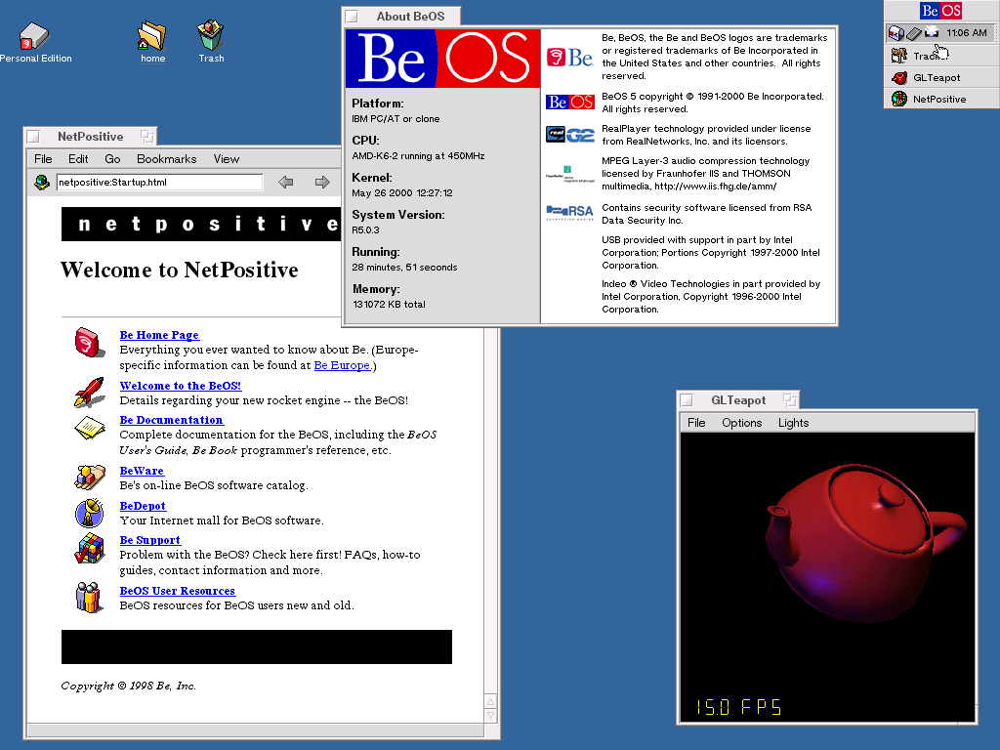

Alan Abramowski
Klasa 1 TIF
BeOS – system operacyjny opracowany przez firmę Be Inc. Zaprojektowany do zastosowań multimedialnych. Do obsługi multimediów zastosowano nowoczesne rozwiązania takie jak; obsługę wielowątkowości, obsługę wielozadaniowości czy 64-bitowy system plików Be File System.
Wielowątkowe jądro zaprojektowane w architekturze mikrojądra. Zgodny z interfejsem POSIX (posiada także własne API: obiektowe, zorganizowane w klasy, opracowane dla języka C++). Oferuje bezpośredni dostęp do grafiki (omijając swój system graficzny). BeOS wykorzystywał biblioteki OpenGL do sprzętowej akceleracji grafiki.
Domyślną powłoką tekstową jest Bash, a funkcję powłoki graficznej w systemie graficznym (GUI) pełni program Tracker. Brak typowego trybu tekstowego – aplikacje tekstowe działają w okienku.
BeOS mógł być również uruchamiany również w środowisku Microsoft Windows, dzięki specjalnej wersji używającej wirtualnego środowiska startowego.
